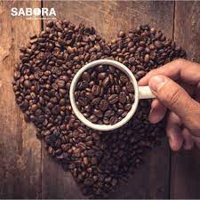
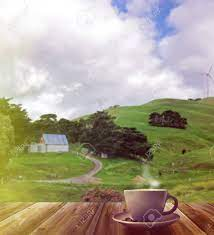
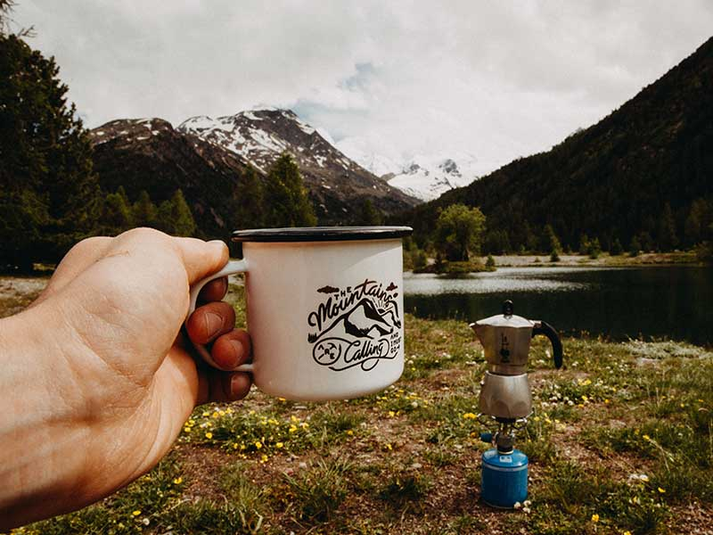

Capuccino
Los secretos para hacer el café más espumoso, contados por expertos

Desde el batido de la leche hasta la temperatura de la taza, aprende todo sobre este extraordinario café...
Los secretos para hacer el café más espumoso, contados por expertos
Desde el batido de la leche hasta la temperatura de la taza, aprende todo sobre este extraordinario café...
¿Ya sabes todo acerca de este delicioso Café?
Cómo hacer el café más refrescante que arrasa en las redes sociales
¡Descubre el amplio abanico de cafeteras existentes, algunas de ellas te sorprenederán!
¿No tienes claro cuales son los principales tipos de cafetera? Y sobre todo ¿No sabes que máquina de café es adecuada para ti? Si estas pensando en comprar una nueva cafetera, es posible que te sientas abrumado por la gran cantidad de cafeteras que vas a encontrar. Descubre todo Aquí
Hablemos de Molienda y de otras cosas más
Moler café es más complejo de lo que parece a simple vista, el grando de molienda, el tipo de molino, el grado de tostado o incluso la cafetera que tienes determinará el resultado final de tu taza.
Averigua todos los beneficios ocultos que trae el café
La cafeína, la sustancia psicoactiva más consumida y bebida en el mundo, es el ingrediente más conocido del café. Te contamos sus beneficios y desventajas de tomarlo
Aprende como hacer el mejor cafe austero de todos los tiempos
Uno de los mejores momentos del camping es cuando paramos después de una larga jornada de actividad, reponer fuerzas aquí se hace primordial, y que mejor que con un café caliente. ¡Descubre cómo preparar el café perfecto en el aire libre según seis de los mejores baristas!